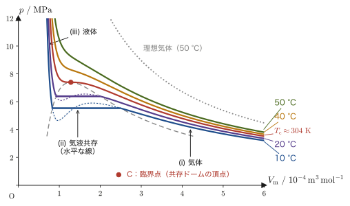
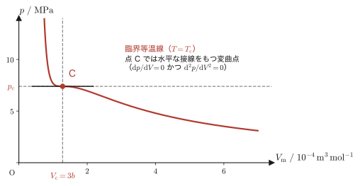
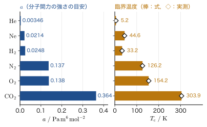

第24章気体分子運動論とファンデルワールスの状態方程式
前章では，気体の圧力・体積・温度の関係を，ボイルの法則やシャルルの法則という「実験から見つかった規則」として学んだ．圧力 $p$，体積 $V$，物質量 $n$，絶対温度 $T$ の間に成り立つ理想気体の状態方程式 $pV=nRT$ も，やはり実験事実として導入した．しかし，そもそも「温度」とは何だろうか．手で触れて「熱い」「冷たい」と感じるあの感覚は，分子の世界では何に対応しているのだろうか．
この章では，気体を「非常に多数の小さな粒（分子）が容器の中を飛び回っているもの」というモデル（気体分子運動論，kinetic theory of gases）で捉え直し，力・運動量・力積という第I部で学んだ力学の道具だけを使って，圧力という巨視的（マクロ）な量が，分子1個1個の運動という微視的（ミクロ）な量からどのように生まれるかを，一行も式変形を飛ばさずに導く．その帰結として，「絶対温度とは，分子1個あたりの平均の運動エネルギーを測る目盛りにほかならない」という，熱力学の中でも特に美しい結果 $\frac12m\overline{|\bm v|^2}=\frac32\frac{R}{N_{\mathrm A}}T$ にたどり着く．
後半では，理想気体のモデルでは説明できない現象——気体を冷やしたり圧縮したりすると液体になる——を扱うために，ファンデルワールス（van der Waals）の状態方程式を導入する．理想気体の状態方程式に，分子自身の大きさと分子間力という2つの「現実の効果」を補正として付け加えるだけで，気体の液化や臨界点という現象が数式の中に自然に現れてくる様子を見ていく．
- 熱力学第0法則——「熱平衡」という関係が推移的であること——の意味と，温度計が使える理由
- 気体分子運動論：1個の分子が容器の壁に及ぼす力積・力を，力学の運動量変化から求め，それを $N$ 個の分子について積み上げて圧力の式を導き，理想気体の状態方程式と比較することで $\frac12m\overline{|\bm v|^2}=\frac32\frac{R}{N_{\mathrm A}}T$（分子の平均運動エネルギーと絶対温度の関係）を得る
- ボルツマン定数 $k_{\mathrm B}=R/N_{\mathrm A}$ の導入と，自由度・エネルギー等分配の法則
- Ar（アルゴン）ガスを例にした，分子の2乗平均速度の具体的な数値計算
- ファンデルワールスの状態方程式 $(p+a/V^2)(V-b)=RT$ の導出と，気体の液化・臨界点（臨界温度・臨界圧力・臨界体積）
もとにしたノート：望月泰英『物理学ノート 熱力学』 pp. 11–17．
24.1 熱力学第0法則と気体分子運動論への準備
気体の温度を測るとき，私たちは温度計を気体に接触させ，しばらく待ってから目盛りを読む．なぜこれで気体自身の温度がわかるのだろうか．その理由を明確にするのが，次の法則である．まず，法則の中心に出てくる「熱平衡」という言葉を説明しておこう．
2つの系を，熱を通す壁で（たとえば直接触れさせて）接触させ，十分に長い時間放置したとき，どちらの系の状態も変化しなくなったとする．このとき，2つの系は熱平衡（thermal equilibrium）にあるという．系 A と系 B が熱平衡にあることを，本書では $\mathrm A\sim\mathrm B$ と書く．熱平衡は「A が B と平衡ならば，B も A と平衡」という対称な関係（$\mathrm A\sim\mathrm B\Rightarrow\mathrm B\sim\mathrm A$）である．また，ひとつの系だけを外から孤立させて十分放置したときに，もう状態が変化しなくなった場合も，その系は熱平衡状態にあるという．
法則24.1 熱力学第0法則（zeroth law of thermodynamics）
2つの熱力学的な系（下記コラム参照）A，B が熱平衡状態にあり（$\mathrm A\sim\mathrm B$），同じ状態の系 A と，別の系 C もまた熱平衡状態にあるならば（$\mathrm A\sim\mathrm C$），系 B と C もまた熱平衡状態にあり（$\mathrm B\sim\mathrm C$），B と C の温度は等しい．
この法則は「温度」という量を矛盾なく決められることを保証している．温度とは，熱平衡にある系どうしが共通にもつ量のことであり，熱平衡にある系の温度は等しい．そして，温度が等しい系どうしを接触させても，どちらの状態も変化しない．
熱力学的な「系」とは
「系」（system）とは，考察の対象として区切って取り出した物質のかたまり（たとえば容器に入った気体）のことで，その外側は外部（周囲）と呼ぶ．くわしくは第23章 23.5節と第26章 26.1節を見よ．
イメージ：なぜ温度計が使えるのか
法則24.1で，共通の系として温度計 C を選んでみよう．温度計 C を測りたい気体 A に接触させてしばらく待つと，両者は熱平衡状態になり（$\mathrm C\sim\mathrm A$），温度計の目盛りが気体 A の温度を示す．次に，同じ温度計 C を別の気体 B に接触させて待ち，やはり熱平衡になった（$\mathrm C\sim\mathrm B$）ところで目盛りを読むと，先ほどと同じ値を示したとしよう．熱平衡は対称な関係なので，法則24.1の「A，B，C」の役割を「C，A，B」に読み替えて使うと，「$\mathrm C\sim\mathrm A$ かつ $\mathrm C\sim\mathrm B$ ならば $\mathrm A\sim\mathrm B$」が導かれる．つまり，A と B は同じ温度であり，直接接触させても変化しない．A と B を直接接触させて確かめなくても，共通の温度計 C を介した比較だけで「同じ温度かどうか」を判定できるということであり，これが温度計というものが機能するしくみである．
熱力学第0法則という名前は，歴史的には熱力学第1法則・第2法則（後の章で学ぶ）が先に確立したあとになって，「実は第1法則よりも基本的な，独立した公理が必要だ」と認識されたためについた名前である（1930年代に R. H. Fowler が命名したとされる）．論理的な位置づけとしては第1法則よりも手前にあるべき法則なので，「0」番が割り当てられている．
なぜ単原子分子を考えるか
これからの議論では，主に He（ヘリウム）や Ar（アルゴン）のような希ガスの単原子分子（monatomic molecule，分子が原子1個だけからなるもの）を考える．$\mathrm{N_2}$ や $\mathrm{O_2}$ のような2原子分子，$\mathrm{H_2O}$ のような多原子分子は，並進運動（分子全体の位置が変わる運動）に加えて回転や振動という運動もできるため，話が複雑になる．単原子分子には回転や振動に対応する自由度がなく，運動の自由度が数少なくシンプルなので，まずはこちらから始める（多原子分子の回転・振動が関わる自由度については24.3節と第26章で扱う）．
例題24.1 熱力学第0法則の応用
体積・物質量の異なる3つの理想気体の容器 A，B，C があり，圧力と体積の測定値は次の通りである：A（$p_{\mathrm A}=2.0\times10^5\ \mathrm{Pa}$，$V_{\mathrm A}=1.0\times10^{-3}\ \mathrm{m^3}$，$n_{\mathrm A}=0.080\ \mathrm{mol}$），B（$p_{\mathrm B}=1.0\times10^5\ \mathrm{Pa}$，$V_{\mathrm B}=3.0\times10^{-3}\ \mathrm{m^3}$，$n_{\mathrm B}=0.120\ \mathrm{mol}$），C（$p_{\mathrm C}=3.0\times10^5\ \mathrm{Pa}$，$V_{\mathrm C}=2.0\times10^{-3}\ \mathrm{m^3}$，$n_{\mathrm C}=0.240\ \mathrm{mol}$）．気体 A と C が熱平衡状態にある（$\mathrm A\sim\mathrm C$）という情報が別途わかっているとき，熱力学第0法則を使って，A と B が熱平衡状態にあるかどうかを判定せよ（気体定数 $R=8.31\ \mathrm{J/(mol\,K)}$）．
解答 理想気体の状態方程式 $pV=nRT$（第23章）を $T=pV/(nR)$ の形に変形し，それぞれの温度を求める．
$$ T_{\mathrm A}=\frac{p_{\mathrm A}V_{\mathrm A}}{n_{\mathrm A}R}=\frac{(2.0\times10^5)\times(1.0\times10^{-3})}{0.080\times8.31}=\frac{2.0\times10^{2}}{0.6648}\approx 300.8\ \mathrm{K} $$ $$ T_{\mathrm B}=\frac{p_{\mathrm B}V_{\mathrm B}}{n_{\mathrm B}R}=\frac{(1.0\times10^5)\times(3.0\times10^{-3})}{0.120\times8.31}=\frac{3.0\times10^{2}}{0.9972}\approx 300.8\ \mathrm{K} $$ $$ T_{\mathrm C}=\frac{p_{\mathrm C}V_{\mathrm C}}{n_{\mathrm C}R}=\frac{(3.0\times10^5)\times(2.0\times10^{-3})}{0.240\times8.31}=\frac{6.0\times10^{2}}{1.9944}\approx 300.8\ \mathrm{K} $$3つとも同じ温度 $T\approx300.8\ \mathrm K$ であることが計算からわかった．次の順に結論を導く．
- 前提の確認：熱平衡にある系の温度は等しい（法則24.1）から，「$\mathrm A\sim\mathrm C$」という前提のもとでは $T_{\mathrm A}=T_{\mathrm C}$ でなければならない．計算結果 $T_{\mathrm A}=T_{\mathrm C}$ はこれと矛盾せず，つじつまが合っている．
- B と C の関係：$T_{\mathrm B}=T_{\mathrm C}$ である．温度が等しい系どうしは，接触させても状態が変化しない（熱平衡にある）ので，$\mathrm B\sim\mathrm C$ と判定できる．
- 法則24.1の適用：C を共通の系として，$\mathrm C\sim\mathrm A$（前提）と $\mathrm C\sim\mathrm B$（2. で判定）から，法則24.1の A，B，C をそれぞれ C，A，B に読み替えて $\mathrm A\sim\mathrm B$，すなわち A と B は熱平衡状態にある．
実際には，こうして3つの気体の状態方程式から温度をそれぞれ独立に計算して比較すればよいのであって，A・B・C を実際に接触させて確かめる必要はない——これが熱力学第0法則の実用上のありがたみである．
それでは，気体分子運動論の舞台を設定しよう．図24.1のように，1辺の長さが $\ell\ [\mathrm m]$ の立方体の容器の中に，質量 $m\ [\mathrm{kg}]$ の単原子分子が1個入っているとする．この分子の速度ベクトルを $\bm v=[v_x,v_y,v_z]$ とおく（$\bm v$ は太字のベクトル，$v_x,v_y,v_z$ はその $x,y,z$ 成分で，正負の値を取りうる細字のスカラーである）．容器の中の気体分子はすべて，容器の壁と完全弾性衝突を繰り返しながら飛び回っているものとする．
定義24.1 完全弾性衝突（perfectly elastic collision）
衝突の前後で物体の速さが変わらない衝突を完全弾性衝突という．力学第I部（第2章 2.6節）で学んだ反発係数 $e$ を使えば，$e=1$ の衝突のことである．分子が容器の壁と完全弾性衝突をするとき，壁に垂直な方向の速度成分だけが向きを反転し（大きさは変わらない），壁に平行な方向の速度成分は変化しない．
24.2 気体分子運動論の導出——圧力と分子の運動エネルギーの関係
それでは，実際に圧力の式を導いていこう．力学第I部で学んだとおり，物体が力を受けて運動量が変化するとき，その変化量は物体が受けた力積（impulse，力の大きさと，力がはたらいた時間の積）に等しい（第2章 2.2節）．気体分子が壁に衝突する現象も，この運動量と力積の関係でとらえることができる．
気体分子運動論のモデル：4つの仮定と記号
これから導く結果は，次の4つの仮定（気体分子運動論のモデル）にもとづいている．
- 分子は大きさの無視できる質点として扱う．
- 分子どうしは衝突せず，分子間にはたらく力も無視する．したがって，分子は壁で反射されるまで等速直線運動をする（あとで往復距離を $2\ell$ とおけるのは，この仮定のおかげである）．
- 分子と壁との衝突は完全弾性衝突（定義24.1）で，壁に垂直な速度成分だけが反転する．
- 分子の運動の向きは，特定の方向に偏らずあらゆる向きに等しく（等方的に）散らばっている．
仮定4より，どの壁も同じ大きさの圧力を受ける（気体の圧力はどの向きの壁でも同じ）．そこで，1つの壁面 $S$ に注目して圧力を求めれば十分である．なお，本章では気体の体積は大文字の細字 $V$，分子の速度は小文字の太字 $\bm v$（成分は $v_x,v_y,v_z$）で書き，区別する．
導出：1個の分子が壁面 $S$ に及ぼす力
図24.1のように，質量 $m$ の分子が，壁面 $S$（容器の右側面，面積 $S=\ell^2$）に向かう $x$ 方向の速度成分 $v_x$（$v_x\gt0$，壁に向かう向きを正にとる）をもって衝突するとする．定義24.1（完全弾性衝突）より，壁に垂直な方向の速度成分は，大きさを変えずに向きだけが反転する．したがって，衝突の前後で分子の運動量の $x$ 成分は，
$$ (\text{衝突前})\ mv_x\ \longrightarrow\ (\text{衝突後})\ -mv_x $$のように変化する（$y,z$ 方向の速度成分は壁に平行なので変化しない）．運動量変化と力積の関係（第2章 2.2節）より，分子は壁から力積 $(-mv_x)-(mv_x)=-2mv_x$ を受け取ったことになる．作用・反作用の法則により，壁面 $S$ はこの反対符号の力積を分子から受け取る．よって，壁面 $S$ が1回の衝突で分子から受ける力積 $I$（壁が受ける力と，その力がはたらいた時間との積 $f\cdot t$ に等しい）は，
\begin{equation} I=f\cdot t=mv_x-(-mv_x)=2mv_x \label{eq:24-impulse} \end{equation}である．
（導出終わり）
イメージをつかもう：1秒間に何回衝突するか
気体分子の速さは，常温でおよそ数百 $\mathrm{m/s}$ から千数百 $\mathrm{m/s}$という非常に大きな値になる（例24.1で実際に計算する）．そこで，注目している1個の分子の，$x$ 方向の運動だけに着目しよう．図24.2のように，この分子は壁面 $S$ と，その反対側にある壁との間を往復しながら，$S$ に繰り返し衝突する．$S$ に1回衝突してから，反対側の壁で反射してふたたび $S$ に衝突するまでに，分子が $x$ 方向に進む距離は，容器の1辺の長さ $\ell$ の往復分，すなわち $2\ell$ である．速さ $v_x$ で距離 $2\ell$ を進むのにかかる時間は $\tau=2\ell/v_x$ だから，この分子が壁面 $S$ に衝突する頻度（1秒あたりの衝突回数）は，その逆数
$$ \frac{1}{2\ell/v_x}=\frac{v_x}{2\ell}\ [\mathrm{s^{-1}}] $$である．単位を確認すると $[\mathrm{m/s}]\times\left[\dfrac1{\mathrm m}\right]=[\mathrm{s^{-1}}]$ となり，「1秒あたりの回数」という次元と一致する．
この衝突頻度 $v_x/(2\ell)$ を，1回の衝突で生じる力積 $I=2mv_x$（式 \eqref{eq:24-impulse}）に掛け合わせると，「1秒間あたりに壁面 $S$ が受け取る力積の合計」が得られる．これが，壁面 $S$ が1個の分子から受ける時間平均の力 $f$ そのものである（別の見方をすると，周期 $\tau=2\ell/v_x$ ごとに力積 $I$ が与えられるので，時間平均の力は $f=I/\tau$ である．同じ計算になる）：
\begin{equation} f=2mv_x\times\frac{v_x}{2\ell}=\frac{mv_x^2}{\ell} \label{eq:24-fsingle} \end{equation}次に，容器の中に分子が1個ではなく多数入っている場合を考えよう．物質量 $1\ \mathrm{mol}$ の中に含まれる粒子（分子・原子など）の個数を表す定数をアボガドロ定数（Avogadro constant）$N_{\mathrm A}$ という（高校化学でおなじみの「$1\ \mathrm{mol}=6.02\times10^{23}$ 個」という関係を，正確な記号で表したものである）．CODATA 2018（SI2019改定の定義値）では $N_{\mathrm A}=6.022\,140\,76\times10^{23}\ \mathrm{mol^{-1}}$（厳密な定義値）である．容器内に物質量 $n\ [\mathrm{mol}]$ の気体が入っているとすると，気体分子の総数 $N$ は，
\begin{equation} N=nN_{\mathrm A} \label{eq:24-Nmol} \end{equation}と表せる．
注意：バー（オーバーライン）は平均を表す
これから先，量の上に横線を引いた記号 $\bar f$，$\overline{v_x^2}$ などが登場する．これは「$N$ 個ある分子について，その量を平均した値」を意味する記号（オーバーライン，平均を表す）である．たとえば $\overline{v_x^2}$ は，分子1個1個の $v_x^2$（$k$ 番目の分子については $(v_x^2)_k$ と書く）をすべて足して $N$ で割ったもの，
$$ \overline{v_x^2}=\frac1N\sum_{k=1}^{N}(v_x^2)_k $$である．$N$ 個の分子はそれぞれ違う速さ・向きで飛び回っているので，$f$ や $v_x^2$ の値は分子ごとに異なるが，「平均」を考えることで，容器全体でならした挙動を扱えるようになる．
式 \eqref{eq:24-fsingle} の $f=mv_x^2/\ell$ は分子1個あたりの力だったから，$N$ 個の分子全体が壁面 $S$ に及ぼす力 $F$ は，1個あたりの力の平均 $\bar f$ に分子数 $N$ を掛けたものになる：
\begin{equation} F=N\bar f=nN_{\mathrm A}\cdot\frac{m\overline{v_x^2}}{\ell} \label{eq:24-Fbar} \end{equation}ここで，速度ベクトル $\bm v=[v_x,v_y,v_z]$ の大きさの2乗は，三平方の定理（ピタゴラスの定理を3次元に拡張したもの）より $|\bm v|^2=v_x^2+v_y^2+v_z^2$ と書ける．両辺を，容器内の $N$ 個の分子について平均すると，
$$ \overline{|\bm v|^2}=\frac1N\sum_{k=1}^N(|\bm v|^2)_k=\frac1N\sum_{k=1}^N\left\{(v_x^2)_k+(v_y^2)_k+(v_z^2)_k\right\} $$ $$ =\frac1N\sum_{k=1}^N(v_x^2)_k+\frac1N\sum_{k=1}^N(v_y^2)_k+\frac1N\sum_{k=1}^N(v_z^2)_k=\overline{v_x^2}+\overline{v_y^2}+\overline{v_z^2} $$となる（和を3つの部分に分けて計算しなおしただけで，どこにも近似は使っていない）．
ここで，気体分子は容器の中で特定の方向に偏ることなく，あらゆる向きに不規則に（ランダムに）飛び回っていると考えてよい（仮定4）．したがって $x,y,z$ のどの方向にも統計的な区別はなく，
\begin{equation} \overline{v_x^2}=\overline{v_y^2}=\overline{v_z^2} \label{eq:24-isotropy0} \end{equation}が成り立つ（気体の等方性という）．これを先ほどの式に代入すると $\overline{|\bm v|^2}=3\,\overline{v_x^2}$，すなわち
\begin{equation} \overline{v_x^2}=\frac13\overline{|\bm v|^2} \label{eq:24-isotropy} \end{equation}が得られる．これを式 \eqref{eq:24-Fbar} に代入すると，
\begin{equation} F=nN_{\mathrm A}\cdot\frac13\cdot\frac{m\overline{|\bm v|^2}}{\ell}\ [\mathrm N] \label{eq:24-Ffinal} \end{equation}となる．
注意：単位の確認
ここまでの式に現れる単位を確認しておこう．力の単位は $[\mathrm N]=[\mathrm{kg\,m/s^2}]$ であり，これを面積 $[\mathrm{m^2}]$ で割った圧力の単位は $[\mathrm{N/m^2}]=[\mathrm{Pa}]$（パスカル）である．また，力 $[\mathrm N]$ と長さ $[\mathrm m]$ の積は $[\mathrm{N\cdot m}]=[\mathrm J]$（ジュール，エネルギーの単位）になる．この2つの単位の対応は，このあとの式変形で自然に現れる．
式 \eqref{eq:24-Ffinal} の両辺を，壁面の面積 $S=\ell^2\ [\mathrm{m^2}]$ で割ると，
$$ \frac{F}{\ell^2}=nN_{\mathrm A}\cdot\frac13\cdot\frac{m\overline{|\bm v|^2}}{\ell^3}\ [\mathrm{N/m^2}] $$となる．左辺の $F/\ell^2$ は，単位面積あたりの力，すなわち圧力そのものである．さらに両辺に容器の体積 $\ell^3\ [\mathrm{m^3}]$ を掛けると，
$$ F\cdot\ell=nN_{\mathrm A}\cdot\frac13\cdot m\overline{|\bm v|^2}\ [\mathrm{N\cdot m}] $$となる．ここで $p\equiv F/\ell^2\ [\mathrm{Pa}]$（圧力），$V\equiv\ell^3\ [\mathrm{m^3}]$（容器の体積）とおくと，
\begin{equation} pV=nN_{\mathrm A}\cdot\frac13\cdot m\overline{|\bm v|^2}\ [\mathrm{N\cdot m}] \label{eq:24-pV-kinetic} \end{equation}という関係が得られる．これが，気体分子運動論（力学）から導かれる圧力の式である．
ところで，この単原子分子理想気体には，第23章で学んだ理想気体の状態方程式 $pV=nRT$ がそのまま成り立つはずである（気体分子運動論はミクロな視点からの導出であり，マクロな状態方程式と矛盾してはならない）．したがって，式 \eqref{eq:24-pV-kinetic} の右辺と $nRT$ は等しくなければならない：
$$ nRT=nN_{\mathrm A}\cdot\frac13\cdot m\overline{|\bm v|^2} $$両辺を $n$ で割り，右辺の $\dfrac13$ を $\dfrac23\times\dfrac12$ と書き直すと，
$$ RT=N_{\mathrm A}\cdot\frac23\cdot\frac12m\overline{|\bm v|^2} \qquad\Longrightarrow\qquad \frac23\cdot\frac12m\overline{|\bm v|^2}=\frac{R}{N_{\mathrm A}}T $$となり，両辺に $\dfrac32$ を掛けると，
\begin{equation} \frac12m\overline{|\bm v|^2}=\frac32\cdot\frac{R}{N_{\mathrm A}}\cdot T \label{eq:24-key} \end{equation}が導かれる．
公式24.1 分子の平均運動エネルギーと絶対温度の関係
単原子分子理想気体において，分子1個あたりの平均の運動エネルギー $\frac12m\overline{|\bm v|^2}$ と絶対温度 $T$ の間には，
$$ \frac12m\overline{|\bm v|^2}=\frac32\cdot\frac{R}{N_{\mathrm A}}\cdot T $$という関係が成り立つ．すなわち，絶対温度とは，分子1個あたりの平均運動エネルギーを測る目盛りにほかならない．気体分子運動論という純粋に力学的なモデルだけから，熱力学の量である「温度」の分子論的な意味が明らかになったことに注意しよう．
例題24.2 1辺10cmの容器中の1分子・1molが壁に及ぼす力
1辺 $\ell=0.10\ \mathrm m$ の立方体容器に，$1\ \mathrm{mol}$ の窒素 $\mathrm{N_2}$（分子量 $28.0$，単原子分子ではないが，ここでは大きさの見積もりのため気体分子運動論の結果をそのまま用いる）が入っており，常温 $T=300\ \mathrm K$ であるとする．(a) 1個の分子が壁に及ぼす平均の力 $\bar f$，(b) $N=nN_{\mathrm A}$ 個すべての分子が及ぼす合計の力 $F$ を，それぞれ桁で見積もれ．
解答 分子1個の質量は $m=M/N_{\mathrm A}=(28.0\times10^{-3})/(6.02\times10^{23})\approx4.65\times10^{-26}\ \mathrm{kg}$．公式24.1（式 \eqref{eq:24-key}）と，等方性の関係式 \eqref{eq:24-isotropy}（$\overline{v_x^2}=\frac13\overline{|\bm v|^2}$）を組み合わせると，
$$ \overline{v_x^2}=\frac13\overline{|\bm v|^2}=\frac13\times\frac{3RT}{mN_{\mathrm A}}=\frac{RT}{mN_{\mathrm A}} $$である．数値を代入すると，
$$ \overline{v_x^2}=\frac{RT}{mN_{\mathrm A}}=\frac{8.31\times300}{(4.65\times10^{-26})\times(6.02\times10^{23})}\approx8.91\times10^{4}\ \mathrm{m^2/s^2} $$式 \eqref{eq:24-fsingle}（$f=mv_x^2/\ell$，ここでは平均値 $\bar f=m\overline{v_x^2}/\ell$ を使う）より，
$$ \bar f=\frac{m\overline{v_x^2}}{\ell}=\frac{(4.65\times10^{-26})\times(8.91\times10^{4})}{0.10}\approx4.14\times10^{-20}\ \mathrm N $$という，1個の分子が及ぼす力は非常に小さい値になる．一方，$N=nN_{\mathrm A}=6.02\times10^{23}$ 個の分子全体では，
$$ F=N\bar f\approx(6.02\times10^{23})\times(4.14\times10^{-20})\approx2.49\times10^{4}\ \mathrm N $$桁数だけ確認すると，理想気体の状態方程式 $pV=nRT$ から求めた圧力 $p=nRT/\ell^3\approx(1\times8.31\times300)/(0.10)^3\approx2.49\times10^{6}\ \mathrm{Pa}$ に面積 $\ell^2=0.01\ \mathrm{m^2}$ を掛けると $F=p\ell^2\approx2.49\times10^{4}\ \mathrm N$ となり，一致する．分子1個あたりの力は測定できないほど小さいが，アボガドロ数個も集まると，容器の壁を実際に押す（$\approx2.5\times10^4\ \mathrm N$，質量にして約2.5トンぶんの重さに相当）ほどの合計の力になることがわかる．なお，この圧力は約25気圧（$1\ \mathrm{atm}=1.013\times10^5\ \mathrm{Pa}$ として $24.6\ \mathrm{atm}$）であり，理想気体からのずれ（24.4節のファンデルワールス式で見積もると約1.5%）は小さいので，桁の見積もりには十分である．
この式がまだ教えてくれないこと——第34章への予告
式 \eqref{eq:24-key} は，$N$ 個の分子の運動エネルギーを平均した値と温度の関係を与えるが，個々の分子がどんな速さで飛んでいるか（速さの分布のしかた）については何も教えてくれない．実際には，同じ温度の気体の中でも，非常に遅い分子から非常に速い分子まで幅広く分布しており，この分布のしかた（マクスウェルの速度分布則）は第34章で扱う．
例題24.3 気体分子運動論の導出を数値で追う
1辺 $\ell=0.20\ \mathrm m$ の立方体容器に，質量 $m=5.0\times10^{-26}\ \mathrm{kg}$ の分子が入っており，その分子の $x$ 方向の速度成分が $v_x=450\ \mathrm{m/s}$ であるとする．(a) この分子が壁面 $S$ に1回衝突するときに生じる力積 $I$［式 \eqref{eq:24-impulse}］，(b) 1秒あたりの衝突回数，(c) 壁面 $S$ に及ぼす平均の力 $f$［式 \eqref{eq:24-fsingle}］を，それぞれ数値で求めよ．
解答 (a) 式 \eqref{eq:24-impulse} より，
$$ I=2mv_x=2\times(5.0\times10^{-26})\times450=4.5\times10^{-23}\ \mathrm{kg\,m/s} $$(b) 衝突頻度は
$$ \frac{v_x}{2\ell}=\frac{450}{2\times0.20}=1.125\times10^{3}\ \mathrm{s^{-1}} $$(c) 式 \eqref{eq:24-fsingle} より，
$$ f=\frac{mv_x^2}{\ell}=\frac{(5.0\times10^{-26})\times450^2}{0.20}=5.06\times10^{-20}\ \mathrm N $$（検算：(a)の答えに(b)の衝突頻度を掛けても，同じ値 $4.5\times10^{-23}\times1.125\times10^3=5.06\times10^{-20}\ \mathrm N$ になることを確認できる．また，(a) を周期 $\tau=2\ell/v_x=2\times0.20/450=8.9\times10^{-4}\ \mathrm s$ で割っても同じ値になる．）
例題24.4 なぜ $v_x$ の平均ではなく $v_x^2$ の平均が現れるのか
導出に現れたのは $\overline{v_x}$ ではなく $\overline{v_x^2}$ であった．もし $\overline{v_x}$ で考えたらどうなるか．また，なぜ $\overline{v_x^2}$ が圧力を決めるのか，説明せよ．
解答 容器の中の分子は，$+x$ 向きに動くものと $-x$ 向きに動くものが（等方的なので）同数ずつあり，$v_x$ は正負の値をとる．したがって，$N$ 個の分子について $v_x$ を平均すると打ち消し合って $\overline{v_x}=0$ になる．もし力が $v_x$ に比例するのなら，平均の力もゼロになってしまうはずだが，実際には壁は押されている．
それは，壁を押す力が $v_x$ ではなく $f=mv_x^2/\ell$，つまり $v_x^2$ に比例するからである．$v_x^2$ は $v_x$ の符号によらず常に正（または0）であり，壁に向かう分子（$v_x\gt0$）は壁に衝突して力積を与える．一方，壁から遠ざかる向きの分子（$v_x\lt0$）は，いずれ反対側の壁で反射されて $+x$ 向きに向きを変え，やはり壁面 $S$ に衝突する．したがって，向きによらず $v_x^2$ が正であることが，全分子について足し合わせても打ち消し合わない理由であり，平均 $\overline{v_x^2}$ が0でない値（$\frac13\overline{|\bm v|^2}$）として圧力を生み出す．
関連シミュレーター：理想気体（箱の中の分子と，内部エネルギー・エンタルピー・エントロピー）
24.3 ボルツマン定数・自由度とエネルギー等分配の法則
式 \eqref{eq:24-key}（公式24.1）に現れる $R/N_{\mathrm A}$ という組み合わせは，気体の種類や物質量によらない普遍的な定数である．この定数には，特別な名前と記号が与えられている．
定義24.2 ボルツマン定数（Boltzmann constant）
気体定数 $R$ とアボガドロ定数 $N_{\mathrm A}$ の比
\begin{equation} k_{\mathrm B}\equiv\frac{R}{N_{\mathrm A}} \label{eq:24-kB} \end{equation}をボルツマン定数（オーストリアの物理学者ボルツマン（L. Boltzmann, 1844–1906）にちなむ）という．2019年のSI（国際単位系）改定により，その値そのものが
$$ k_{\mathrm B}=1.380\,649\times10^{-23}\ \mathrm{J/K}\qquad(\text{定義値，厳密}) $$と定められている．アボガドロ定数 $N_{\mathrm A}=6.022\,140\,76\times10^{23}\ \mathrm{mol^{-1}}$ も定義値であり，気体定数はこの2つの積 $R=k_{\mathrm B}N_{\mathrm A}=8.314\,462\,618\ldots\ \mathrm{J/(mol\,K)}$ として（導出値として）定まる．つまり現在では $k_{\mathrm B}$ と $N_{\mathrm A}$ の値が先に固定され，そこから $R$ が決まる，という順序になっている（歴史的には逆に，$R$ と $N_{\mathrm A}$ をそれぞれ独立に測定してから比 $k_{\mathrm B}=R/N_{\mathrm A}$ を計算していた）．単位 $\mathrm{J/K}$ は，あとで見るように熱容量の単位でもある．
ボルツマン定数を使うと，公式24.1（式 \eqref{eq:24-key}）は，
$$ \frac12m\overline{|\bm v|^2}=\frac32k_{\mathrm B}T $$と簡潔に書き直せる．
公式24.2 単原子分子理想気体の内部エネルギー
気体分子どうしにはたらく分子間力による位置エネルギーを無視できる（分子の運動エネルギーに比べて非常に小さい）とすると，容器内の $N=nN_{\mathrm A}$ 個の分子がもつ運動エネルギーの総和が，そのままこの気体の内部エネルギー（internal energy）$U$ になる：
\begin{equation} U=N\times\frac12m\overline{|\bm v|^2}=nN_{\mathrm A}\times\frac32\cdot\frac{R}{N_{\mathrm A}}\cdot T=\frac32nRT\ [\mathrm J] \label{eq:24-U} \end{equation}この結果を，もう一つの見方から確かめよう．単原子分子理想気体において，1個の分子は $x,y,z$ の3つの方向に自由に運動できる．力学的に言えば，この分子の運動状態を指定するのに，互いに独立な速度成分が3つ（$v_x,v_y,v_z$）必要だということであり，これを「分子は3つの自由度（degree of freedom）をもつ」という．
なぜ単原子分子は自由度が3つなのか
分子1個の位置を指定するには $x,y,z$ の3つの座標が必要であり，それに対応して独立な運動の方向（速度成分）も3つある．単原子分子は原子1個だけからなるので，回転（自転）や，原子どうしの結合の伸び縮み（振動）に対応する自由度はない——回転や振動という運動が意味を持つには，複数の原子（質点）が組み合わさっている必要があるからである．第26章で見るように，$\mathrm{N_2}$ や $\mathrm{O_2}$ のような2原子分子は，並進の3自由度に加えて回転の自由度をもつため，自由度の数が増え，内部エネルギーや熱容量が単原子分子とは異なる値になる．
式 \eqref{eq:24-isotropy0}（等方性 $\overline{v_x^2}=\overline{v_y^2}=\overline{v_z^2}$）と，公式24.1の $\frac12m\overline{|\bm v|^2}=\frac32k_{\mathrm B}T$ を組み合わせると，
$$ \frac12m\overline{v_x^2}+\frac12m\overline{v_y^2}+\frac12m\overline{v_z^2}=\frac12m\overline{|\bm v|^2}=\frac32k_{\mathrm B}T $$であり，かつ左辺の3つの項は互いに等しい（$\overline{v_x^2}=\overline{v_y^2}=\overline{v_z^2}$ だから $\frac12m\overline{v_x^2}=\frac12m\overline{v_y^2}=\frac12m\overline{v_z^2}$）．したがって，右辺 $\frac32k_{\mathrm B}T$ を3等分すればよく，
\begin{equation} \frac12m\overline{v_x^2}=\frac12m\overline{v_y^2}=\frac12m\overline{v_z^2}=\frac12k_{\mathrm B}T=\frac12\cdot\frac{R}{N_{\mathrm A}}\cdot T\ [\mathrm J] \label{eq:24-equipartition} \end{equation}が得られる（図24.4）．つまり，$x,y,z$ のどの方向の運動にも，まったく同じ大きさ $\frac12k_{\mathrm B}T$ のエネルギーが割り当てられている．
法則24.2 エネルギー等分配の法則（単原子分子の場合）
熱平衡にある気体では，分子の運動の各自由度に対して，等しい大きさのエネルギー $\frac12k_{\mathrm B}T$ が割り当てられる（エネルギー等分配の法則，equipartition theorem）．単原子分子は3つの（並進の）自由度をもつので，1分子あたりの平均運動エネルギーは $3\times\frac12k_{\mathrm B}T=\frac32k_{\mathrm B}T$ になる．
注意：多原子分子では自由度が増える
単原子分子より複雑な多原子分子は，回転や振動などによって運動の自由度が増える．それでも，エネルギー等分配の法則（各自由度に $\frac12k_{\mathrm B}T$）は成り立つ．たとえば，$\mathrm{N_2}$ や $\mathrm{O_2}$ のような2原子分子では，並進の3自由度に，回転の2自由度（分子軸のまわりの回転は数えない）が加わり，常温では合わせて5自由度になる（結合の伸び縮みの振動は，量子論の効果のため常温ではほとんど励起されない．この話は第26章と第50章で扱う）．
公式24.3 自由度 $f$ の分子からなる理想気体の内部エネルギー
各分子の（2次形式で書ける）自由度の数を $f$ とし，分子間力を無視できるとすると，$n\ [\mathrm{mol}]$ の気体の内部エネルギーは，等分配の法則から
\begin{equation} U=N\times f\times\frac12k_{\mathrm B}T=\frac f2\,nRT\ [\mathrm J] \label{eq:24-Uf} \end{equation}となる．単原子分子（$f=3$）なら式 \eqref{eq:24-U} の $U=\frac32nRT$ に，常温の2原子分子（$f=5$）なら $U=\frac52nRT$ になる．
一般の等分配則へ——第50章への予告
ここで示したのは，単原子分子という最も単純な場合についての結果である．実は，「1自由度あたり $\frac12k_{\mathrm B}T$」という規則は，並進運動に限らず，回転や振動（より正確には，運動エネルギーやポテンシャルエネルギーが速度・座標の2次形式で書ける自由度全般）についても成り立つ，もっと一般的な法則（エネルギー等分配の法則）の特別な場合であることが知られている．一般の場合の証明には，統計力学のカノニカル分布（ボルツマン因子）を用いる必要があり，これは第50章で扱う．
例24.1 Arガスの2乗平均速度を求めてみよう
アルゴン（Ar）の分子量（無次元の相対値）は $39.9$ であり，1 mol あたりの質量（モル質量）は $M_{\mathrm{Ar}}=39.9\ \mathrm{g/mol}=39.9\times10^{-3}\ \mathrm{kg/mol}$ である．Ar は単原子分子気体（希ガス）である．Arガスの分子の速度を $\bm v$ として，公式24.1（式 \eqref{eq:24-key}）
$$ \frac12m\overline{|\bm v|^2}=\frac32\cdot\frac{R}{N_{\mathrm A}}\cdot T $$を $\overline{|\bm v|^2}$ について解くと，
$$ \overline{|\bm v|^2}=\frac{3R}{mN_{\mathrm A}}T $$となる．ここで，$m$ はAr原子1個の質量，$N_{\mathrm A}$ はアボガドロ定数だから，その積 $mN_{\mathrm A}$ はAr $1\ \mathrm{mol}$ あたりの質量，すなわちモル質量 $M_{\mathrm{Ar}}=39.9\times10^{-3}\ \mathrm{kg/mol}$ に等しい．したがって，
$$ \overline{|\bm v|^2}=\frac{3RT}{M_{\mathrm{Ar}}}=\frac{3\times8.31\times T}{39.9\times10^{-3}}\ [\mathrm{m^2/s^2}] $$である．単位を確認すると，$[\mathrm{J/kg}]=[\mathrm{N\cdot m/kg}]=[\mathrm{kg\,m/s^2\cdot m/kg}]=[\mathrm{m^2/s^2}]$ となり，速さの2乗の単位と一致している．両辺の平方根をとると $\sqrt{\overline{|\bm v|^2}}$（2乗平均速度，root-mean-square speed，rms 速度．平均の速さ $\overline{|\bm v|}$ そのものとはわずかに異なる量であることに注意）が得られる．室温に近い $T=290\ \mathrm K$ を代入すると，
$$ \sqrt{\overline{|\bm v|^2}}=\sqrt{\frac{3\times8.31\times290}{39.9\times10^{-3}}}\approx425.7\ \mathrm{m/s} $$となる（$R=8.314\,462\,6\ \mathrm{J/(mol\,K)}$ を使うと $425.8\ \mathrm{m/s}$ で，この差は $R$ の丸めによる）．音速（常温の空気中でおよそ $340\ \mathrm{m/s}$）と同程度か，やや大きいことがわかる．
なお，速さ $|\bm v|$ の単純な平均 $\overline{|\bm v|}$ は，第34章で見るように $\sqrt{8/(3\pi)}\approx0.92$ 倍で，ここでは約 $392\ \mathrm{m/s}$ になる（最も多くの分子がもつ速さは rms 速度の約 $0.82$ 倍，約 $348\ \mathrm{m/s}$ である）．どれも同じ程度の大きさで，気体の分子は常温で毎秒数百メートルもの速さで飛び回っていることに変わりはない．
例題24.5 N₂分子の2乗平均速度とArとの比較
窒素分子 $\mathrm{N_2}$（分子量 $28.0$）について，例24.1と同様の計算で，常温 $T=300\ \mathrm K$ における2乗平均速度 $\sqrt{\overline{|\bm v|^2}}$ を求め，同じ温度でのArガスの値と比較せよ．
解答 $\mathrm{N_2}$ のモル質量は $M_{\mathrm{N_2}}=28.0\times10^{-3}\ \mathrm{kg/mol}$ である．例24.1と同じ式を用いると，
$$ \sqrt{\overline{|\bm v|^2}}=\sqrt{\frac{3RT}{M_{\mathrm{N_2}}}}=\sqrt{\frac{3\times8.31\times300}{28.0\times10^{-3}}}\approx516.8\ \mathrm{m/s} $$Arについても同じ温度 $T=300\ \mathrm K$ で計算すると（$M_{\mathrm{Ar}}=39.9\times10^{-3}\ \mathrm{kg/mol}$），
$$ \sqrt{\overline{|\bm v|^2}}=\sqrt{\frac{3\times8.31\times300}{39.9\times10^{-3}}}\approx432.9\ \mathrm{m/s} $$となる．式 \eqref{eq:24-key} で温度 $T$ が共通なら $m\overline{|\bm v|^2}$（したがって $M\overline{|\bm v|^2}$）が一定であること，すなわち $\overline{|\bm v|^2}\propto1/M$ に注意すると，2つの気体の比は
$$ \frac{\sqrt{\overline{|\bm v|^2}}_{\mathrm{N_2}}}{\sqrt{\overline{|\bm v|^2}}_{\mathrm{Ar}}}=\sqrt{\frac{M_{\mathrm{Ar}}}{M_{\mathrm{N_2}}}}=\sqrt{\frac{39.9}{28.0}}\approx1.194 $$となり，実際に $516.8/432.9\approx1.194$ で一致する．モル質量が小さい $\mathrm{N_2}$ の方が，同じ温度でも速く飛び回っていることがわかる——温度が同じ（＝分子1個あたりの平均運動エネルギーが同じ）でも，質量が軽い分子ほど速く飛び回らないと同じ運動エネルギーを持てない，という直感とも合っている．
例題24.6 ボルツマン定数と室温の熱エネルギー
(a) $R=8.31\ \mathrm{J/(mol\,K)}$，$N_{\mathrm A}=6.02\times10^{23}\ \mathrm{mol^{-1}}$（ふつうの計算で使う丸めた値）から $k_{\mathrm B}=R/N_{\mathrm A}$ を計算し，定義値 $1.380\,649\times10^{-23}\ \mathrm{J/K}$ と比べよ．(b) 室温 $T=300\ \mathrm K$ での $k_{\mathrm B}T$ を $\mathrm J$ と $\mathrm{eV}$ で求めよ（$1\ \mathrm{eV}=1.602\,176\,634\times10^{-19}\ \mathrm J$）．(c) その温度での分子1個あたりの平均運動エネルギー $\frac32k_{\mathrm B}T$ はいくらか．
解答 (a) 丸めた値で割ると，
$$ k_{\mathrm B}\approx\frac{8.31}{6.02\times10^{23}}=1.380\times10^{-23}\ \mathrm{J/K} $$となり，定義値 $1.380\,649\times10^{-23}\ \mathrm{J/K}$ と4桁で一致する（相対誤差は約 $0.02\%$．$R=8.31$ は $8.3145$ の，$N_{\mathrm A}=6.02\times10^{23}$ は $6.022\times10^{23}$ の丸めなので，この程度のずれは丸め誤差のためである）．
(b) 定義値を使って，
$$ k_{\mathrm B}T=(1.380\,649\times10^{-23})\times300=4.142\times10^{-21}\ \mathrm J $$ $$ k_{\mathrm B}T=\frac{4.142\times10^{-21}}{1.602\,176\,634\times10^{-19}}\ \mathrm{eV}=2.585\times10^{-2}\ \mathrm{eV}\approx0.026\ \mathrm{eV} $$(c) $\frac32k_{\mathrm B}T=1.5\times4.142\times10^{-21}=6.213\times10^{-21}\ \mathrm J\approx0.039\ \mathrm{eV}$．
室温の熱エネルギー $k_{\mathrm B}T\approx0.026\ \mathrm{eV}$ は，たとえばシリコンのバンドギャップ（約 $1.1\ \mathrm{eV}$）よりはるかに小さい．熱運動だけでは電子が価電子帯から伝導帯へほとんど飛び越えられない，という半導体の話は，このエネルギーの大きさの比較から出発する．
例題24.7 ArとN₂の内部エネルギーの比較（自由度の違い）
$300\ \mathrm K$ の Ar（単原子分子）$1\ \mathrm{mol}$ と，$300\ \mathrm K$ の $\mathrm{N_2}$（自由度5：並進3＋回転2，常温では振動は凍結）$1\ \mathrm{mol}$ の内部エネルギーを，公式24.3 $U=\frac f2nRT$ で求めて比較せよ（$R=8.31\ \mathrm{J/(mol\,K)}$）．
解答 Ar は $f=3$ だから，
$$ U_{\mathrm{Ar}}=\frac32\times1\times8.31\times300=3.74\times10^{3}\ \mathrm J\approx3.74\ \mathrm{kJ} $$$\mathrm{N_2}$ は $f=5$ だから，
$$ U_{\mathrm{N_2}}=\frac52\times1\times8.31\times300=6.23\times10^{3}\ \mathrm J\approx6.23\ \mathrm{kJ} $$比は $U_{\mathrm{N_2}}/U_{\mathrm{Ar}}=5/3\approx1.67$ である．同じ温度・同じ物質量でも，自由度の多い分子のほうが，回転運動にもエネルギーが分配されるぶん，内部エネルギーが大きい．同じだけ温度を上げるのにも，$\mathrm{N_2}$ のほうが多くの熱が必要になる（熱容量が大きい）ことになるが，これは第27章で詳しく学ぶ．
応用：なぜArガスが工業でよく使われるのか
アルゴン（Ar）は，希ガスの中でも空気中に比較的多く含まれ（体積比で約0.93%），化学的に極めて不活性（他の物質と反応しにくい）という性質から，材料科学・工学の現場で幅広く利用されている．たとえば金属のアーク溶接では，高温の溶融金属が空気中の酸素や窒素と反応して酸化物や窒化物をつくり，溶接部の強度を損なうことを防ぐために，Arガスで溶接部を覆う（シールドガス）．半導体の結晶成長やスパッタリング（薄膜形成）の工程でも，余計な反応を起こさない雰囲気をつくるためにArガスが使われる．例24.1で計算したように，常温のArガス分子は2乗平均速度で毎秒400m前後という速さで飛び回っており，この激しい熱運動こそが，Arガスが溶接部や成長中の薄膜の表面のすみずみまで絶えず行き渡る理由である．
24.4 ファンデルワールスの状態方程式と気体の液化
ここまで学んだ気体分子運動論は，分子を大きさの無視できる質点とみなし，分子どうしの間には力がはたらかないと仮定するモデル（理想気体）にもとづいていた．しかし，現実の気体は，十分に冷やしたり圧縮したりすると液体に変化する．たとえば，二酸化炭素 $\mathrm{CO_2}$ の気体は，約 $31\ °\mathrm C$（$\approx304\ \mathrm K$）以下の温度で十分に圧力を加えると液化する．理想気体の状態方程式 $pV=nRT$ だけでは，こうした気体の液化という現象をまったく説明できない．
この節の後半で導くファンデルワールスの状態方程式は，実在気体の p-V 関係を近似的に表す式である．図24.5は，この式が描く $\mathrm{CO_2}$ の圧力 $p$ と体積 $V$ の関係（等温線）を，いくつかの温度について示したものである（この節では $V$ は気体 $1\ \mathrm{mol}$ あたりの体積，つまりモル体積 $V_{\mathrm m}$ を表す）．青の等温線（$10\ °\mathrm C$）をたどってみよう．(i) 体積が大きい領域では気体としてふるまい，圧力を上げるにつれて体積が滑らかに減少する．(ii) さらに圧縮すると，圧力がほとんど変化しない（水平な）まま体積だけが大きく減少する領域が現れる——ここでは気体が少しずつ液体に変わっていく（気液共存状態）．(iii) すべてが液体になると，こんどはわずかな体積変化に対して圧力が急激に上昇する（液体はほとんど圧縮できない）．この形は，理想気体の式 $pV=nRT$ が与える単純な反比例の双曲線（図24.5に灰色の点線で重ねて示した，$50\ °\mathrm C$ の理想気体の場合）とは，体積が小さい側で明らかに異なっていることがわかる．

温度を上げていくと，(ii)の水平な部分（気液共存領域）はしだいに短くなり，ある温度でついに1点にまで縮む．この，気液共存領域がちょうど1点に退化する温度を臨界温度（critical temperature）といい，そのときの圧力・体積をそれぞれ臨界圧力（critical pressure），臨界体積（critical volume）という．
定義24.3 臨界温度・臨界圧力・臨界体積
気体が，どれほど圧力を加えても液化しなくなる境界の温度を臨界温度 $T_{\mathrm c}$ という．圧力 $p$ を体積 $V$ の関数 $p=f(V)$（温度 $T=T_{\mathrm c}$ に固定したときの等温線）とみなすと，臨界温度の等温線上で気液共存領域が退化した点（臨界点，図24.5・図24.6の点C）は，
$$ \left.\frac{\dd f}{\dd V}\right|_{T=T_{\mathrm c}}=0,\qquad \left.\frac{\dd^2 f}{\dd V^2}\right|_{T=T_{\mathrm c}}=0 $$を同時に満たす点である．臨界点における圧力・体積を，それぞれ臨界圧力 $p_{\mathrm c}$，臨界体積 $V_{\mathrm c}$ という．$\mathrm{CO_2}$ の場合，$T_{\mathrm c}=31.0\ °\mathrm C\ (\approx304\ \mathrm K)$ が（実測の）臨界温度である．

なぜ臨界点で1階・2階微分がともに0になるのか
臨界温度より低い温度の等温線には，$\dd p/\dd V=0$ となる点が2つある（図24.5の $10\ °\mathrm C$・$20\ °\mathrm C$ の等温線に見える，谷（極小点）と山（極大点）がそれである．実際の気体はこの区間を水平な直線（気液共存，マクスウェルの規則という考え方で決まる）で置き換えてふるまうが，理想化した数式のままでは山と谷が現れる）．温度を上げていくと，この極大点と極小点は互いに近づいていき，$T=T_{\mathrm c}$ でちょうど1点に重なる．2つの極値（極大・極小）が1点に重なるということは，$p=f(V)$ のグラフがその点で「谷でも山でもない，水平な変曲点」になるということであり，これはテイラー展開を用いた極値の判定条件（大学数学 第4章 4.5節）と関係している．1階微分と2階微分がともに0のとき，極大・極小かどうかは3階微分で決まり，$f'''\neq0$ ならば $p-p_{\mathrm c}\approx\frac{f'''}{6}(V-V_{\mathrm c})^3$ となって，極値ではなく水平な変曲点になる（ファンデルワールス式では，例24.2の結果を使うと $f'''(V_{\mathrm c})=-a/(81b^5)\lt0$ となることが確かめられる）．$T\gt T_{\mathrm c}$ では，こうした極値がそもそも存在せず，等温線は単調に減少するだけになる．
それでは，この現象を表す状態方程式をつくってみよう．
公式24.4 ファンデルワールスの状態方程式（van der Waals equation）
\begin{equation} \left(p+\frac{a}{V^2}\right)(V-b)=RT \label{eq:24-vdw} \end{equation}を，物質量 $1\ \mathrm{mol}$ の気体に対するファンデルワールスの状態方程式という（オランダの物理学者ファンデルワールス（J. D. van der Waals，1837–1923）にちなむ）．$a,b$ は気体の種類ごとに決まる正の定数（ファンデルワールス定数）である．以下の [1]，[2] で，理想気体の状態方程式に2つの補正を加えてこの式を導く．
この節では $V$ は気体 $1\ \mathrm{mol}$ あたりの体積（モル体積 $V_{\mathrm m}$，単位 $\mathrm{m^3/mol}$）を表す．物質量 $n\ [\mathrm{mol}]$ の気体で，$V$ を全体積とする場合には，$V\to V/n$ と置き換えて，$\left(p+\dfrac{n^2a}{V^2}\right)(V-nb)=nRT$ と書く．
ファンデルワールスの状態方程式は，理想気体の状態方程式 $pV=RT$（$1\ \mathrm{mol}$ の場合）に，現実の分子について無視できない2つの効果を補正として書き加えることで導ける．
[1] 体積の補正——分子の大きさ 理想気体のモデルでは，分子を大きさの無視できる質点として扱ってきた．しかし，現実の気体分子には有限の大きさがある．そのため，圧力 $p$ をどれほど大きくしても，気体の体積 $V$ は $0$ には近づかず，ある正の値 $b$（気体 $1\ \mathrm{mol}$ あたり，分子が実際に締め出す体積）に近づくにとどまる（図24.7左）．分子が自由に動き回れる実効的な体積は，見かけの体積 $V$ から $b$ を差し引いた $V-b$ になる，と考えられる．そこで，理想気体の状態方程式 $pV=RT$ の $V$ を $V-b$ に置き換えると，
$$ p(V-b)=RT $$となる．
$b$ は分子の体積そのものではない
半径 $r$ の球とみなした2つの分子は，中心どうしが $2r$ より近づけない．したがって，1個の分子にとって，他の分子の中心が入れない領域は半径 $2r$ の球で，その体積は $\frac{4\pi}{3}(2r)^3=8\times\frac{4\pi}{3}r^3$，つまり分子1個の体積 $v_0=\frac{4\pi}{3}r^3$ の8倍である．分子2個の組を二重に数えないように2で割ると，分子1個あたり $4v_0$ になる．よって，$1\ \mathrm{mol}$ あたりで $b\approx4N_{\mathrm A}v_0=4N_{\mathrm A}\cdot\frac{4\pi}{3}r^3$，すなわち $b$ は分子自身の体積の $N_{\mathrm A}$ 倍のおよそ4倍（排除体積，excluded volume）にあたる（例題24.10で数値を確かめる）．
[2] 圧力の補正——分子間力 現実の気体分子どうしには，弱い引力（ファンデルワールス力）がはたらいている．容器の壁の近くにいる分子に注目すると，壁の外側には分子がいないのに対し，容器の内側（壁と反対の向き）には多数の分子が存在するため，この分子は周囲の分子から，容器の内部へ引き戻す向きの引力を平均として受ける（図24.7右）．そのため，分子が壁に衝突するときの速度は，この引力によってわずかに弱められる．その結果，実際に測定される圧力 $p$ は，分子間力がまったく無いと仮定した場合の（気体分子運動論がそのまま予言する）圧力よりも小さくなる．
この圧力の低下量は，次のように見積もれる．単位面積の壁に単位時間にぶつかる分子の数は，分子の密度 $N/V$ に比例する（24.2節で導いた圧力の式 \eqref{eq:24-pV-kinetic} も，$p\propto N/V$ を表している）．そのおのおのが，壁に近づくときに内側の分子から受ける引力のために失う運動量は，まわりの分子の密度 $N/V$ にも比例する．したがって，圧力の低下量全体は，この2つの効果の積として密度の2乗 $(N/V)^2\propto1/V^2$ に比例すると考えられる（$1\ \mathrm{mol}$ では $N=N_{\mathrm A}$ は一定なので，$V$ に反比例する量の2乗として $1/V^2$）．そこで，圧力の低下量を $a/V^2$（$a$ は正の定数，気体 $1\ \mathrm{mol}$ あたり）とおくと，分子間力の無い「理想的な」圧力は，実際に測定される圧力 $p$ よりも $a/V^2$ だけ大きい $p+a/V^2$ になる．
この $p+a/V^2$ を，[1]で得た式の $p$ の代わりに使うと，
$$ \left(p+\frac{a}{V^2}\right)(V-b)=RT $$となり，式 \eqref{eq:24-vdw} のファンデルワールスの状態方程式が得られる．
理想気体の極限——$a=0$ かつ $b=0$，あるいは $V\to\infty$
式 \eqref{eq:24-vdw} で，分子間力が無視できる（$a=0$）だけなら $p(V-b)=RT$，分子の大きさが無視できる（$b=0$）だけなら $(p+a/V^2)V=RT$ となる．この2つは，どちらもまだ理想気体の式ではない．両方を無視する（$a=0$ かつ $b=0$）と，はじめて $pV=RT$（理想気体の状態方程式）にきちんと戻る．また，$a,b$ を残したままでも，体積 $V$ が非常に大きい極限（気体が非常に薄い極限）では，$a/V^2\to0$，$b/V\to0$ となるので，やはり理想気体の式に近づく．気体が薄いほど，分子の大きさや分子間力の効果が相対的に無視できるようになる，という直感と対応している（例題24.11で数値的に確認する）．
例24.2 臨界体積・臨界圧力・臨界温度をファンデルワールス定数で表す
ファンデルワールスの状態方程式（式 \eqref{eq:24-vdw}）をもとに，温度 $T=T_{\mathrm c}$（臨界温度）のときの臨界体積 $V_{\mathrm c}$，臨界圧力 $p_{\mathrm c}$，臨界温度 $T_{\mathrm c}$ を，ファンデルワールス定数 $a,b$ で表してみよう．
解答 式 \eqref{eq:24-vdw} を $p$ について解くと，$T=T_{\mathrm c}$ のとき，
$$ p(V)=\frac{RT_{\mathrm c}}{V-b}-\frac{a}{V^2} $$である（大学数学 第3章 3.2節の商の微分公式，あるいは $(V-b)^{-1}$ を $V-b$ を1つの変数とみた累乗の微分として扱えばよい）．これを $V$ で1階・2階微分すると，
$$ \frac{\dd}{\dd V}p(V)=-\frac{RT_{\mathrm c}}{(V-b)^2}+\frac{2a}{V^3}\qquad\cdots\ ① $$ $$ \frac{\dd^2}{\dd V^2}p(V)=\frac{2RT_{\mathrm c}}{(V-b)^3}-\frac{6a}{V^4}\qquad\cdots\ ② $$定義24.3より，臨界点 $V=V_{\mathrm c}$ では①，②がともに0になるから，
$$ \begin{cases} \dfrac{RT_{\mathrm c}}{(V_{\mathrm c}-b)^2}=\dfrac{2a}{V_{\mathrm c}^{3}} & \cdots\ ①'\\[2mm] \dfrac{2RT_{\mathrm c}}{(V_{\mathrm c}-b)^3}=\dfrac{6a}{V_{\mathrm c}^{4}} & \cdots\ ②' \end{cases} $$が成り立つ．②'を①'で辺々割ると（左辺どうし，右辺どうしを割ればよい），
$$ \frac{2}{V_{\mathrm c}-b}=\frac{3}{V_{\mathrm c}} \qquad\Longleftrightarrow\qquad \frac{V_{\mathrm c}-b}{2}=\frac{V_{\mathrm c}}{3} $$となる（この計算では，左辺どうしの比 $\dfrac{2RT_{\mathrm c}/(V_{\mathrm c}-b)^3}{RT_{\mathrm c}/(V_{\mathrm c}-b)^2}=\dfrac{2}{V_{\mathrm c}-b}$，右辺どうしの比 $\dfrac{6a/V_{\mathrm c}^4}{2a/V_{\mathrm c}^3}=\dfrac{3}{V_{\mathrm c}}$ が等しいとおいている．続く式変形は，両辺の逆数をとったものである）．これを $V_{\mathrm c}$ について解くと，$3(V_{\mathrm c}-b)=2V_{\mathrm c}$，すなわち
\begin{equation} V_{\mathrm c}=3b \label{eq:24-Vc} \end{equation}が得られる．次に，この $V_{\mathrm c}=3b$ を①'に代入する．$V_{\mathrm c}-b=3b-b=2b$，$V_{\mathrm c}^3=(3b)^3=27b^3$ に注意すると，
$$ \frac{RT_{\mathrm c}}{(2b)^2}=\frac{2a}{27b^3} \qquad\Longrightarrow\qquad T_{\mathrm c}=\frac{2a}{27b^3}\times\frac{(2b)^2}{R}=\frac{2a}{27b^3}\times\frac{4b^2}{R}=\frac{8a}{27Rb} $$すなわち
\begin{equation} T_{\mathrm c}=\frac{8a}{27Rb} \label{eq:24-Tc} \end{equation}である．さらに，これらを $p(V)$ の式に代入すると，
$$ p_{\mathrm c}=\frac{RT_{\mathrm c}}{V_{\mathrm c}-b}-\frac{a}{V_{\mathrm c}^2}=\frac{R}{2b}\times\frac{8a}{27Rb}-\frac{a}{(3b)^2}=\frac{4a}{27b^2}-\frac{a}{9b^2}=\frac{4a}{27b^2}-\frac{3a}{27b^2} $$すなわち
\begin{equation} p_{\mathrm c}=\frac{a}{27b^2} \label{eq:24-pc} \end{equation}が得られる．表24.1のファンデルワールス定数 $a=0.364\ \mathrm{Pa\,m^6/mol^2}$，$b=4.27\times10^{-5}\ \mathrm{m^3/mol}$（$\mathrm{CO_2}$ の値）を代入すると，
$$ V_{\mathrm c}=3b\approx1.28\times10^{-4}\ \mathrm{m^3/mol},\qquad T_{\mathrm c}=\frac{8a}{27Rb}\approx303.9\ \mathrm K,\qquad p_{\mathrm c}=\frac{a}{27b^2}\approx7.39\times10^{6}\ \mathrm{Pa} $$となる（$R=8.31\ \mathrm{J/(mol\,K)}$ を使った）．$T_{\mathrm c}\approx303.9\ \mathrm K\ (\approx30.8\ °\mathrm C)$ と $p_{\mathrm c}\approx7.39\ \mathrm{MPa}$ は，$\mathrm{CO_2}$ の実測の臨界点（$31.0\ °\mathrm C$，約 $7.4\ \mathrm{MPa}$）とよく合っている．
ファンデルワールス式の量的な限界——臨界体積は合わない
定数 $a,b$ は，たとえば臨界点の実測値 $T_{\mathrm c},p_{\mathrm c}$ に合わせて，式 \eqref{eq:24-Tc}，\eqref{eq:24-pc} を $a,b$ について解いた $b=RT_{\mathrm c}/(8p_{\mathrm c})$，$a=27R^2T_{\mathrm c}^2/(64p_{\mathrm c})$ で決めることができる．こうして決めると，$T_{\mathrm c}$ と $p_{\mathrm c}$ は（そう決めたのだから）実測と合う．ところが，臨界体積は別で，$\mathrm{CO_2}$ では式 \eqref{eq:24-Vc} の $V_{\mathrm c}=3b\approx1.28\times10^{-4}\ \mathrm{m^3/mol}$ に対して，実測の臨界体積は約 $9.4\times10^{-5}\ \mathrm{m^3/mol}$ で，式の値のほうが約4割大きい．同じことは，$p_{\mathrm c}V_{\mathrm c}/(RT_{\mathrm c})$（臨界圧縮因子）にも現れる．ファンデルワールス式ではどんな気体でも $\frac{p_{\mathrm c}V_{\mathrm c}}{RT_{\mathrm c}}=\frac{a}{27b^2}\cdot3b\cdot\frac{27Rb}{8a}\cdot\frac1R=\frac38=0.375$ になるが，実在気体の実測値は $\mathrm{CO_2}$ で約 $0.27$ である．このように，ファンデルワールス式は気体の液化と臨界点を定性的にはよく説明するが，量的には近似式であり，どの量でも実測に合うわけではない．この限界と，気体によらない普遍的な形に書き直す方法（対応状態の原理）は第25章で扱う．
| 気体 | $a\ [\mathrm{Pa\,m^6/mol^2}]$ | $b\ [\mathrm{m^3/mol}]$ |
|---|---|---|
| He | $0.003\,46$ | $2.37\times10^{-5}$ |
| Ne | $0.0214$ | $1.71\times10^{-5}$ |
| $\mathrm{H_2}$ | $0.0248$ | $2.66\times10^{-5}$ |
| $\mathrm{N_2}$ | $0.137$ | $3.87\times10^{-5}$ |
| $\mathrm{O_2}$ | $0.138$ | $3.19\times10^{-5}$ |
| $\mathrm{CO_2}$ | $0.364$ | $4.27\times10^{-5}$ |

例題24.8 H₂とCO₂，どちらが液化しやすいか
表24.1のファンデルワールス定数を用いて，水素 $\mathrm{H_2}$ と二酸化炭素 $\mathrm{CO_2}$ の臨界温度 $T_{\mathrm c}=8a/(27Rb)$（式 \eqref{eq:24-Tc}）をそれぞれ計算し，どちらの気体の方が（同じ圧力条件のもとで）液化しやすいか答えよ．
解答 表24.1より，$\mathrm{H_2}$：$a=0.0248\ \mathrm{Pa\,m^6/mol^2}$，$b=2.66\times10^{-5}\ \mathrm{m^3/mol}$．$\mathrm{CO_2}$：$a=0.364\ \mathrm{Pa\,m^6/mol^2}$，$b=4.27\times10^{-5}\ \mathrm{m^3/mol}$．それぞれ代入すると，
$$ T_{\mathrm c}(\mathrm{H_2})=\frac{8\times0.0248}{27\times8.31\times2.66\times10^{-5}}\approx33.2\ \mathrm K $$ $$ T_{\mathrm c}(\mathrm{CO_2})=\frac{8\times0.364}{27\times8.31\times4.27\times10^{-5}}\approx303.9\ \mathrm K $$$T_{\mathrm c}(\mathrm{CO_2})\gt T_{\mathrm c}(\mathrm{H_2})$ である．臨界温度が高いということは，より高い温度でもまだ液化できる（＝より液化させやすい）ことを意味するので，$\mathrm{CO_2}$ の方が $\mathrm{H_2}$ よりも液化しやすい．これは，$\mathrm{CO_2}$ の方が分子間力（ファンデルワールス定数 $a$）が大きいことに対応している——分子どうしが強く引き合うほど，より高い温度・低い圧力でも凝集して液体になりやすい．
例題24.9 $a$ を大きくすると臨界点はどう変わるか
ファンデルワールス定数のうち $a$ だけを2倍にしたら（$b$ は変えない），$V_{\mathrm c}$，$T_{\mathrm c}$，$p_{\mathrm c}$ はそれぞれ何倍になるか．式から答えよ．また，その物理的な意味を述べよ．
解答 式 \eqref{eq:24-Vc}，\eqref{eq:24-Tc}，\eqref{eq:24-pc} より，$V_{\mathrm c}=3b$ は $a$ を含まないので変わらない（1倍）．$T_{\mathrm c}=8a/(27Rb)$ と $p_{\mathrm c}=a/(27b^2)$ はどちらも $a$ に比例するので，$a\to2a$ で $T_{\mathrm c}$，$p_{\mathrm c}$ はともに2倍になる．
意味：$a$ は分子間の引力の強さを表す．引力が強くなると，より高温（分子の熱運動が激しい状態）でも分子どうしが引き合って凝集できるので，臨界温度 $T_{\mathrm c}$ が高くなり（液化しやすくなり），臨界圧力も高くなる．一方，臨界体積 $V_{\mathrm c}$ は分子の大きさ $b$ だけで決まる．（例題24.8の $\mathrm{H_2}$ と $\mathrm{CO_2}$ の違いも，主に $a$ の大きさの違いによる．）
例題24.10 $b$ から $\mathrm{CO_2}$ 分子の大きさを見積もる
$b\approx4N_{\mathrm A}\cdot\frac{4\pi}{3}r^3$（$r$ は分子の半径）の関係を使って，表24.1の $\mathrm{CO_2}$ の $b=4.27\times10^{-5}\ \mathrm{m^3/mol}$ から，分子の半径 $r$ を見積もれ（$N_{\mathrm A}=6.022\times10^{23}\ \mathrm{mol^{-1}}$）．
解答 $b=4N_{\mathrm A}\cdot\frac{4\pi}{3}r^3=\frac{16\pi}{3}N_{\mathrm A}r^3$ を $r^3$ について解くと，
$$ r^3=\frac{3b}{16\pi N_{\mathrm A}}=\frac{3\times(4.27\times10^{-5})}{16\pi\times(6.022\times10^{23})}=\frac{1.281\times10^{-4}}{3.027\times10^{25}}\approx4.23\times10^{-30}\ \mathrm{m^3} $$したがって，
$$ r=\left(4.23\times10^{-30}\right)^{1/3}\ \mathrm m\approx1.62\times10^{-10}\ \mathrm m=0.16\ \mathrm{nm} $$となる．これは原子・小さな分子の大きさとして妥当な値である（たとえば原子の大きさは $0.1\ \mathrm{nm}$ 程度である）．
例題24.11 $V\to\infty$ で理想気体の式に近づくことの確認
式 \eqref{eq:24-vdw} で，$a=0$ かつ $b=0$ とすると理想気体の状態方程式に厳密に一致すること，$a=0$ だけ・$b=0$ だけのときの式の形，および $a,b$ を残したままでも $V\to\infty$ の極限で $pV\to RT$ となることを確認せよ．
解答 式 \eqref{eq:24-vdw} を $p$ について解くと $p=\dfrac{RT}{V-b}-\dfrac{a}{V^2}$ である．$a=0$ だけとすると $p=RT/(V-b)$，すなわち $p(V-b)=RT$（[1]の式そのもの）になる．$b=0$ だけとすると $p=RT/V-a/V^2$，すなわち $(p+a/V^2)V=RT$ になる．どちらも $pV=RT$ ではない．両方を0にした $a=b=0$ のときにはじめて $p=RT/V$，すなわち $pV=RT$ に一致する．また，$pV/(RT)$ を $V\to\infty$ の極限で調べると，
$$ \lim_{V\to\infty}\frac{pV}{RT}=\lim_{V\to\infty}\frac1{RT}\left(\frac{RTV}{V-b}-\frac aV\right)=\lim_{V\to\infty}\left(\frac{1}{1-b/V}-\frac{a}{RTV}\right)=\frac{1}{1-0}-0=1 $$となり（$V\to\infty$ で $b/V\to0$，$a/(RTV)\to0$ を使った），$V\to\infty$（気体が非常に薄い極限）で $pV\to RT$，すなわち理想気体の式に近づくことが確認できる．
応用：気体の液化と産業利用
臨界温度は，気体を液化できるかどうかの境界を与える重要な量である．たとえば天然ガスの主成分であるメタン（$\mathrm{CH_4}$）は臨界温度が $-82.6\,°\mathrm C$ と低く，室温では圧縮するだけでは液化できない．そのため，液化天然ガス（LNG）は，大気圧のもとで沸点の約 $-162\,°\mathrm C$ まで冷却して船で輸送される．逆に，$\mathrm{CO_2}$ は臨界温度が室温に近い（$31.0\,°\mathrm C$）ため，室温付近でも十分な圧力を加えるだけで液化させることができ，消火器や炭酸飲料用のボンベなどに，液化した状態のまま比較的手軽に充填できる．材料プロセスの分野で使われる超臨界$\mathrm{CO_2}$（臨界点を超えた，気体と液体の区別が無くなる状態の$\mathrm{CO_2}$）を溶媒として用いる洗浄・抽出技術も，この臨界点の物理を応用したものである．
24.5 まとめと演習
24.5.1 まとめ
- 熱力学第0法則（法則24.1）：系A，Bが熱平衡状態にあり，Aと系Cも熱平衡状態にあるなら，BとCもまた熱平衡状態にあり，温度が等しい．これが「温度計を使ってよい」ことの論理的な根拠である．
- 気体分子運動論：完全弾性衝突（定義24.1）する分子が壁面に及ぼす力積・力を運動量変化から求め，$N$ 個の分子について積み上げると，$pV=nN_{\mathrm A}\cdot\frac13m\overline{|\bm v|^2}$（式 \eqref{eq:24-pV-kinetic}）が得られる．理想気体の状態方程式 $pV=nRT$ と比較すると，公式24.1（式 \eqref{eq:24-key}）$\frac12m\overline{|\bm v|^2}=\frac32\frac{R}{N_{\mathrm A}}T$ が導かれる——絶対温度とは，分子1個あたりの平均運動エネルギーの目盛りである．
- ボルツマン定数 $k_{\mathrm B}=R/N_{\mathrm A}=1.380\,649\times10^{-23}\ \mathrm{J/K}$（定義24.2，SI2019の定義値）．単原子分子理想気体の内部エネルギー $U=\frac32nRT$（公式24.2）．
- 単原子分子は3つの自由度（$x,y,z$ 方向の並進）をもち，それぞれに等しいエネルギー $\frac12k_{\mathrm B}T$ が配分される（エネルギー等分配の法則，法則24.2）．自由度 $f$ の分子からなる気体では $U=\frac f2nRT$（公式24.3）．一般の（回転・振動を含む）等分配則の証明は第50章で扱う．
- 実在気体は低温・高圧で液化する．ファンデルワールスの状態方程式（公式24.4）$(p+a/V^2)(V-b)=RT$（$V$ はモル体積）は，分子の有限な大きさ（体積補正 $b$，排除体積）と分子間引力（圧力補正 $a/V^2$）という2つの効果を理想気体の式に補正として加えたものである．臨界点（定義24.3）では $\dd p/\dd V=0$ かつ $\dd^2p/\dd V^2=0$ が同時に成り立ち，$V_{\mathrm c}=3b$，$T_{\mathrm c}=8a/(27Rb)$，$p_{\mathrm c}=a/(27b^2)$（式 \eqref{eq:24-Vc}–\eqref{eq:24-pc}）が得られる．$\mathrm{CO_2}$ では $T_{\mathrm c}\approx304\ \mathrm K$，$p_{\mathrm c}\approx7.39\ \mathrm{MPa}$ と実測によく合うが，臨界体積は実測と合わない（第25章）．
- 本章で得た「分子1個あたりの平均運動エネルギー」という結果は，個々の分子の速さの分布までは教えてくれない．その分布（マクスウェルの速度分布則）は第34章で扱う．また，エネルギー等分配の法則の一般的な証明（統計力学のカノニカル分布を用いる）は第50章で扱う．
24.5.2 演習問題
演習24.1 Ar 1分子の質量
アルゴン（Ar，分子量 $39.9$）の分子1個の質量 $m$ を，アボガドロ定数 $N_{\mathrm A}=6.022\times10^{23}\ \mathrm{mol^{-1}}$ を用いて求めよ．
ヒント：分子量は $1\ \mathrm{mol}$ あたりの質量 $[\mathrm{g/mol}]$ であることを思い出そう．
演習24.2 HeガスとArガスの2乗平均速度の比
同じ温度のもとでのHeガス（分子量 $4.00$）とArガス（分子量 $39.9$）について，2乗平均速度 $\sqrt{\overline{|\bm v|^2}}$ の比 $\sqrt{\overline{|\bm v|^2}}_{\mathrm{He}}\big/\sqrt{\overline{|\bm v|^2}}_{\mathrm{Ar}}$ を求めよ．
ヒント：例題24.5と同じように，式 \eqref{eq:24-key} で温度が共通なら $M\overline{|\bm v|^2}$ が一定であることを使う．
演習24.3 ファンデルワールス定数 $a,b$ の物理的な意味
ファンデルワールスの状態方程式 $(p+a/V^2)(V-b)=RT$ に現れる定数 $a$ と $b$ が，それぞれ現実の気体分子のどのような性質を補正しているのかを，自分の言葉で説明せよ．
ヒント：24.4節の[1]，[2]の説明と図24.7を見直そう．
演習24.4 なぜ臨界温度より高温では液化しないのか
$\mathrm{CO_2}$ を，臨界温度（約 $31\ °\mathrm C$）より高い温度に保ったまま，どれほど圧力を上げても液化しないことを，図24.5に描かれた等温線群の形の変化（温度を上げると気液共存領域がどうなるか）から説明せよ．
ヒント：定義24.3の臨界点の条件と，$T\gt T_{\mathrm c}$ の等温線の形を思い出そう．
演習24.5 $U=\frac32nRT$ からの $C_{V,\mathrm m}=\frac32R$ の再導出
単原子分子理想気体の内部エネルギー $U=\frac32nRT$（公式24.2）から，定積モル熱容量 $C_{V,\mathrm m}\equiv\dfrac1n\left(\dfrac{\partial U}{\partial T}\right)_V$ を求めよ．ここで $\left(\dfrac{\partial U}{\partial T}\right)_V$ は，体積 $V$ を一定に保ったまま $T$ だけで $U$ を微分することを意味する（偏微分．大学数学 第6章 6.2節）．
ヒント：$U$ を $T$ で（$n$ を定数として）微分すればよい．
演習24.6 $V$ が非常に大きいときの理想気体の式への収束
ファンデルワールスの状態方程式（式 \eqref{eq:24-vdw}）で，体積 $V$ が定数 $a,b$ に対して非常に大きい（$V\gg b$，$a/V^2\ll p$）とき，式が理想気体の状態方程式 $pV\approx RT$ にどのように近づいていくかを，具体的な近似計算で示せ．
ヒント：例題24.11の極限計算とは別に，$1/(1-b/V)\approx1+b/V$（$b/V$ が小さいときの近似）を使って，より詳しく（1次の補正項まで）近似してみるとよい．
演習24.7 二原子分子の内部エネルギーの変化
酸素 $\mathrm{O_2}$（二原子分子，常温で自由度5）$1\ \mathrm{mol}$ を $300\ \mathrm K$ から $350\ \mathrm K$ に温めるとき，内部エネルギーの増加 $\Delta U$ はいくらか．同じ条件で Ar $1\ \mathrm{mol}$ の $\Delta U$ とも比べよ（$R=8.31\ \mathrm{J/(mol\,K)}$）．
ヒント：公式24.3 $U=\frac f2nRT$ を使う．
24.5.3 参考文献
- 望月泰英『物理学ノート 熱力学』（手書き講義ノート）．本章の底本．
- 原島鮮『熱力学・統計力学』（培風館）．
- H. B. Callen, Thermodynamics and an Introduction to Thermostatistics（Wiley）．
- P. W. Atkins, J. de Paula, J. Keeler, Atkins' Physical Chemistry, 11th ed., Oxford University Press, 2018．ファンデルワールス定数の表を含む物理化学の標準的教科書．
- R. P. Feynman, R. B. Leighton, M. Sands, The Feynman Lectures on Physics, Vol. I（Addison-Wesley）．気体分子運動論の直観的な説明で知られる．